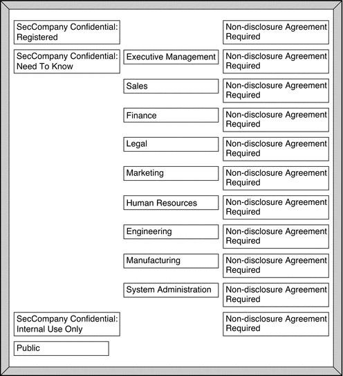

|
|||
|
1. Labels in Trusted Extensions Software 3. Making a Label Encodings File (Tasks) 4. Labeling Printer Output (Tasks) 5. Customizing LOCAL DEFINITIONS 6. Example: Planning an Organization's Labels Identifying the Site's Label Requirements Climbing the Security Learning Curve Editing and Installing the label_encodings File Configuring Users and Printers for Labels |
Analyzing the Requirements for Each LabelThe security administrator agrees that the set of labels that are mandated by the legal department is a useful starting point. However, the further analysis is needed before the labels can be encoded. Requirements for CONFIDENTIAL: INTERNAL_USE_ONLYThe CONFIDENTIAL: INTERNAL_USE_ONLY label is for information that is proprietary to the company but which, because of its low level of sensitivity, can be distributed to all employees. All employees have signed nondisclosure agreements before starting employment. Information with this label might also be distributed to others. For example, the employees of vendors and contractors who have signed a nondisclosure agreement can receive the information. Because the Internet can be snooped, information with this label cannot be sent over the Internet. The information can be sent over email within the company. Candidates for the CONFIDENTIAL: INTERNAL_USE_ONLY label include the following:
Requirements for CONFIDENTIAL: NEED_TO_KNOWThe CONFIDENTIAL: NEED_TO_KNOW label is intended for information that is proprietary to the company, has a higher level of sensitivity than INTERNAL_USE_ONLY, and has a more limited audience. Distribution is limited to employees who need to know the information. Other people who need to know the information and who have signed nondisclosure agreements might also be in the audience. For example, if only the group of people working in a particular project should see certain information, then NEED_TO_KNOW should be used on that information. Whenever information should be restricted to a particular group, the name of the group should be specified on the paper version of the information. Having the name of a group in this label makes it clear that the information should not be given to anyone outside of the group. Information with this label cannot be sent over the Internet but it can be sent over email within the company. Candidates for the NEED_TO_KNOW label include the following:
Requirements for CONFIDENTIAL: REGISTEREDThe CONFIDENTIAL: REGISTERED classification is intended for information that is proprietary to the company, has a very high level of sensitivity, and could significantly harm the company if released. Registered information must be numbered and be tracked by the owner. Each copy must be assigned to a specific person. The copy must be returned to the owner for destruction after being read. Copies can be made only by the owner of the information. Use of brownish-red paper is recommended because this color cannot be copied. This label is to be used when only one specific group of people should be allowed to see the proprietary information. This information cannot be shown to anyone who is not authorized by the owner. The information cannot be shown to employees of other companies who have not signed a nondisclosure agreement, even if the owner authorizes the disclosure. Information with this label cannot be sent through email. Candidates for the CONFIDENTIAL: REGISTERED label include the following:
Names of Groups With NEED_TO_KNOW LabelThe security administrator decided that the NEED_TO_KNOW label should contain the names of groups or departments. The security Administrator asked for suggestions about what words to use to define groups or areas of interest within the organization. The following items were in the initial list:
Later, the security administrator added the Project Team group, which enabled all members of the Engineering and Marketing groups to share project data. Understanding the Set of LabelsThe next step is to resolve the following issues:
The security administrator used a large board. Pieces of paper were marked with the words that should be in the labels, as shown in Figure 6-5. This setup graphed the relationships. The pieces could be rearranged until all the pieces fit together. The administrator drafted the following label relationships:
Figure 6-5 Sample Planning Board for Label Relationships |
||
|